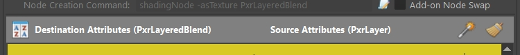
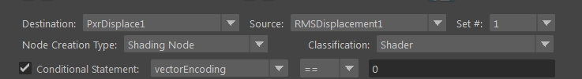

|
|
VERSION 2.1 |
•Added sort button in the attribute match area in the "Setup Node Matches" tab; Sort Alphabetically or by attribute order (usually like the AE GUI)  •Fixed issue with connecting nodes •Fixed issue when loading matched attributes that are multi (with square brackets). •OH boy! This is embarrassing - yep! Yet again, fixed error with matches without "Conditional Value". Hopefully third time's a charm! •Added options for renaming patterns: Prefix+NewNodeName, Prefix+NewNodeName_OriginalNodeName, Prefix+OriginalNodeName, Prefix+OriginalNodeName_NewNodeName • |
VERSION 2.0.1 |
•Fixed, yet again, the "No Match" error for matches without "Conditional Value"....... •Swapping nodes now renaming the new node same as the old one (plus the prefix). •Fixed issues with Add-on swap nodes running as "standard" swap nodes. •Fixed issue where running the swap button multiple times won't create all the network (only first iteration worked). •Limit running the script on one node per iteration. |
VERSION 2.0 |
•New file definition structure. In most cases, older file definitions will be converted to work with this version - it will be slow until you save the new definition (just in case, make sure to keep copies of the old definitions). •Consolidated all the "User Defined" options to a single option "Custom..." which now let you choose one of the options and in most cases also validate the type of attribute and gives options where applicable.
•Created "Add-on Node Swap" in cases where an old node is now built with two or more nodes.
•Created "sets" so one can browse between groups with same node matches but different conditional statements and/or Add-on node swap.  •Added upstream/downstream traversal depth level field. •Renaming transform parents of swapped nodes to be in sync. •Repositioning newly created nodes with viewport representation and a transform node (lights) to match the original's position, rotation, scale and pivot place. •Found matches now highlight and center the row of match you are currently editing (if exists). •Added icon indications if node swap definition is an add-on and/or has a conditional statement.
•Fixed "No Match" error for matches without "Conditional Value". |
VERSION 1.3 |
•Added "Conditional Value" for situations where one node can be swapped with several new ones.
•Changed the top area (found matches) GUI to make it possible to delete sets.
•Added Color highlight rows with no attribute matching set, to make it easier to locate missing for attributes.
• Swap presets for the new RFM lights, PxrM •Added User Defined Value option for static value input |
VERSION 1.2 |
•When creating a match for a node, user has the option to define a "create node command" (in most cases done automatically); this way a Shading Node, for example, can be properly registered in Maya (HyperShade etc.). Please note, using the "Geometry Node" entry or overwriting the create node command can result in unwanted behavior. |
VERSION 1.1 |
•Added a case for TdataCompound (instances) attribute type •Added a "User Defined" menu option for users to manually define destination attributes; Not fully implemented since I am yet unsure how many people will be using this script; once I see a "demand" I might try to finalize it. (currently it stores the values and try to connect them however it doesn't check or take extra steps to make the connection). •Removed some attribute listing restrictions |
VERSION 1.0 |
•Initial release. Following the request(s) on this thread, I have whipped a script that suppose to help in automatically swapping nodes from one to another. Please note this script isn't RenderMan only oriented - I created it so it can work with almost all nodes. •You need to define it initially (sorry didn't have much time but I have created a wizard tool and such to expedite the work). I believe it is pretty straightforward but if not, please comment on the pack thread and I will do my best to help. •It is not a 100% process and requires some human input (for example, converting images to TEX format etc.)
|